Data visualization with ggplot2
Thea Van Rossum
Learning Objectives
- Produce scatter plots, boxplots, and time series plots using ggplot.
- Describe what faceting is and apply faceting in ggplot.
- Modify the aesthetics of a ggplot plot (including axis labels and color).
- Build complex and customized plots from data in a data frame.
required: install.packages(“gridExtra”)
ggplot2 is included in the tidyverse package.
library(tidyverse)## Warning: package 'tibble' was built under R version 3.5.2load the data from prev. lesson
surveys_complete <- read_csv("/Users/rossum/Dropbox/teaching/Workshops/SCW-DCW/lessonsDC/R-ecology-lesson/data_output/surveys_complete.csv")## Parsed with column specification:
## cols(
## record_id = col_double(),
## month = col_double(),
## day = col_double(),
## year = col_double(),
## plot_id = col_double(),
## species_id = col_character(),
## sex = col_character(),
## hindfoot_length = col_double(),
## weight = col_double(),
## genus = col_character(),
## species = col_character(),
## taxa = col_character(),
## plot_type = col_character()
## )look at our data!
str(surveys_complete)## Classes 'spec_tbl_df', 'tbl_df', 'tbl' and 'data.frame': 30463 obs. of 13 variables:
## $ record_id : num 845 1164 1261 1756 1818 ...
## $ month : num 5 8 9 4 5 7 10 11 1 5 ...
## $ day : num 6 5 4 29 30 4 25 17 16 18 ...
## $ year : num 1978 1978 1978 1979 1979 ...
## $ plot_id : num 2 2 2 2 2 2 2 2 2 2 ...
## $ species_id : chr "NL" "NL" "NL" "NL" ...
## $ sex : chr "M" "M" "M" "M" ...
## $ hindfoot_length: num 32 34 32 33 32 32 33 30 33 31 ...
## $ weight : num 204 199 197 166 184 206 274 186 184 87 ...
## $ genus : chr "Neotoma" "Neotoma" "Neotoma" "Neotoma" ...
## $ species : chr "albigula" "albigula" "albigula" "albigula" ...
## $ taxa : chr "Rodent" "Rodent" "Rodent" "Rodent" ...
## $ plot_type : chr "Control" "Control" "Control" "Control" ...
## - attr(*, "spec")=
## .. cols(
## .. record_id = col_double(),
## .. month = col_double(),
## .. day = col_double(),
## .. year = col_double(),
## .. plot_id = col_double(),
## .. species_id = col_character(),
## .. sex = col_character(),
## .. hindfoot_length = col_double(),
## .. weight = col_double(),
## .. genus = col_character(),
## .. species = col_character(),
## .. taxa = col_character(),
## .. plot_type = col_character()
## .. )Plotting with ggplot2
build a plot using programming commands
- reproducible
- documented
- easy to change underlying data
- easy to change visualisation type
- reusable
- helper libraries
ggplot2 functions like data in the ‘long’ format, i.e., a column for every dimension, and a row for every observation. Well-structured data will save you lots of time when making figures with ggplot2
Is there a relationship between foot size and weight?
template:
ggplot(data = <DATA>, mapping = aes(<MAPPINGS>)) + <GEOM_FUNCTION>()indicate the data to use
ggplot(data = surveys_complete)
map variables to axes and colors using the aesthetic (aes) function
ggplot(data = surveys_complete, mapping = aes(x = weight, y = hindfoot_length))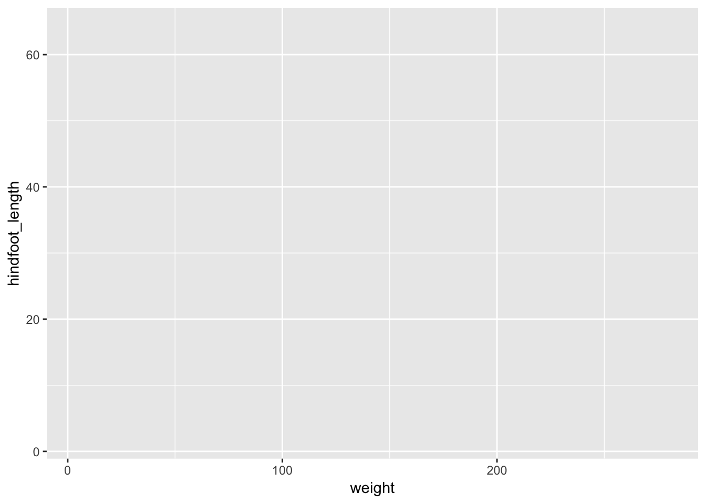
add ‘geoms’ – graphical representations of the data
many available
use the + operator
+ goes at the end of the line (not begining of next line)
+ vs %>%
ggplot(data = surveys_complete, mapping = aes(x = weight, y = hindfoot_length)) +
geom_point()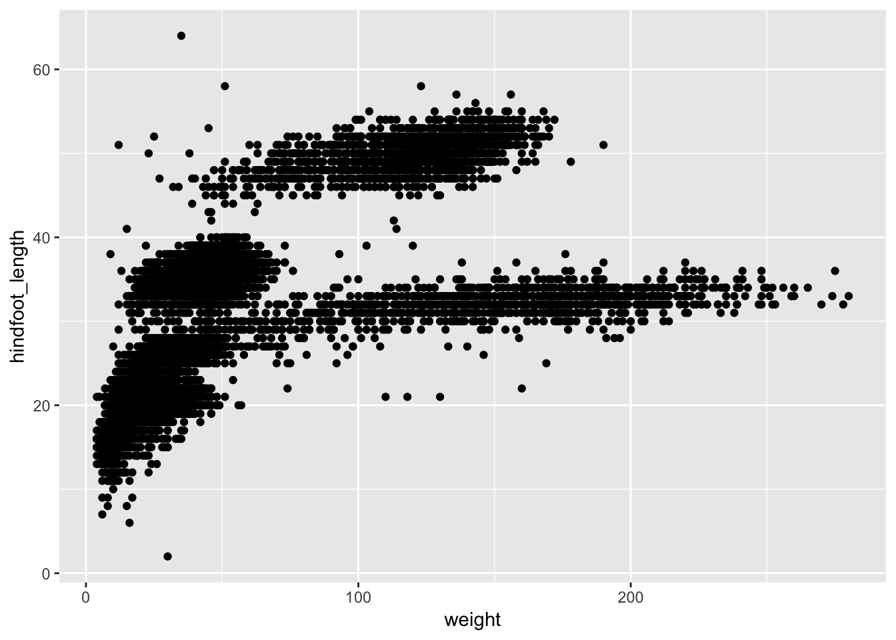
data investigation time!
start by making a plot like we did then modify it to display more information or less information communitcate message more clearly
Is this relationship the same for all genera?
are genera different here? -> add color
ggplot(data = surveys_complete, mapping = aes(x = weight, y = hindfoot_length)) +
geom_point(alpha = 0.4, aes(color = genus))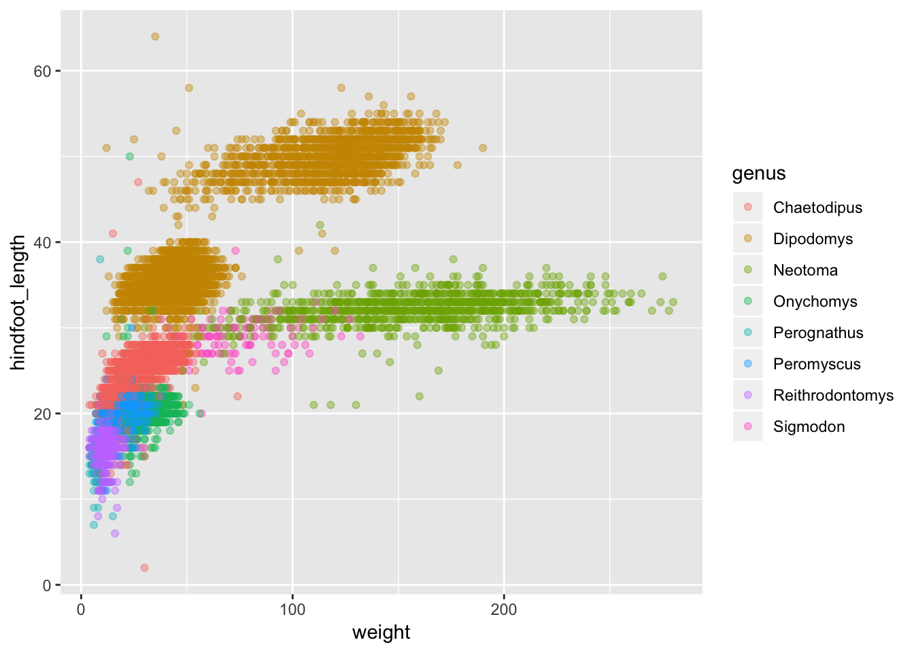
Challenge - scatter plot
Challenge - overplotting - bonus
Challenge: hex plot - optional
Boxplot
do the genera have different weights?
visualize the distribution of weight within each genus
all the built-in geoms: https://ggplot2.tidyverse.org/reference/
use pipe for data
surveys_complete %>%
ggplot(mapping = aes(x = genus, y = weight)) +
geom_boxplot()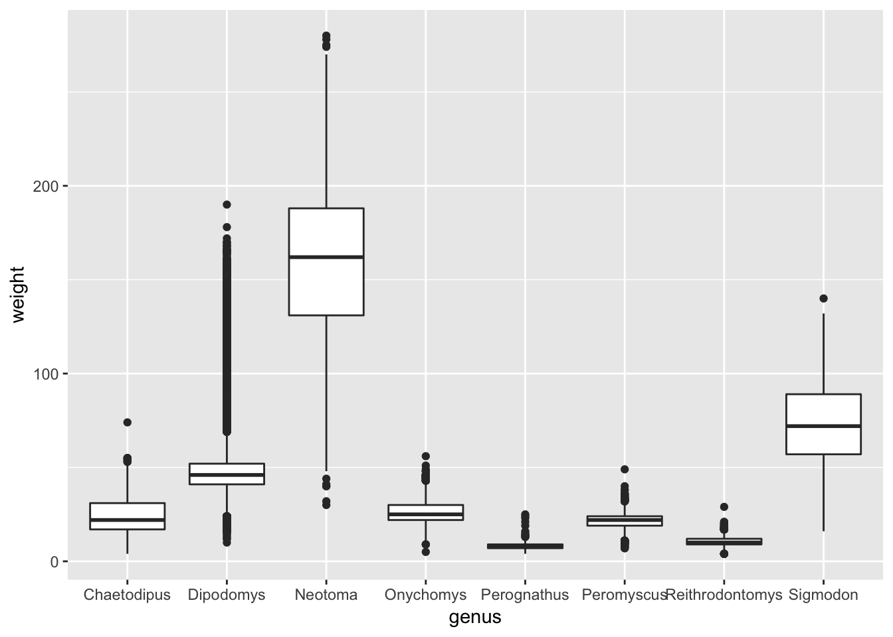
hide less: show points
surveys_complete %>%
ggplot(mapping = aes(x = genus, y = weight)) +
geom_boxplot() +
geom_jitter(height = 0, alpha = 0.3)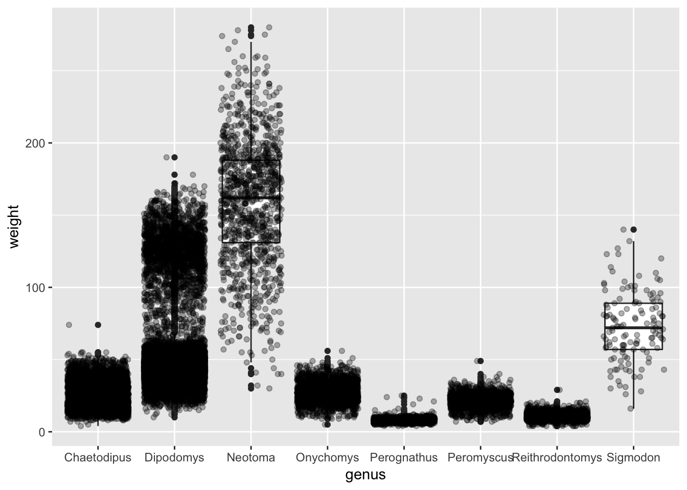
layer order
surveys_complete %>%
ggplot(mapping = aes(x = genus, y = weight)) +
geom_jitter(height = 0, alpha = 0.3)+
geom_boxplot() 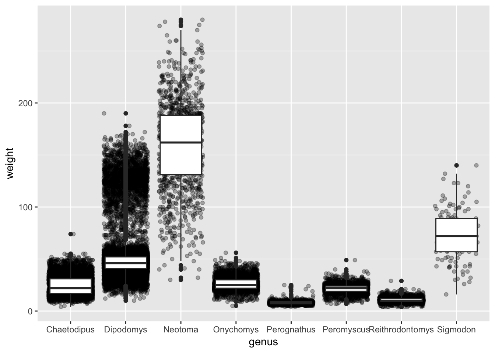
color apply to all layers -> put in top ggplot(aes())
surveys_complete %>%
ggplot(mapping = aes(x = genus, y = weight, color = genus)) +
geom_jitter(height = 0, alpha = 0.3)+
geom_boxplot() 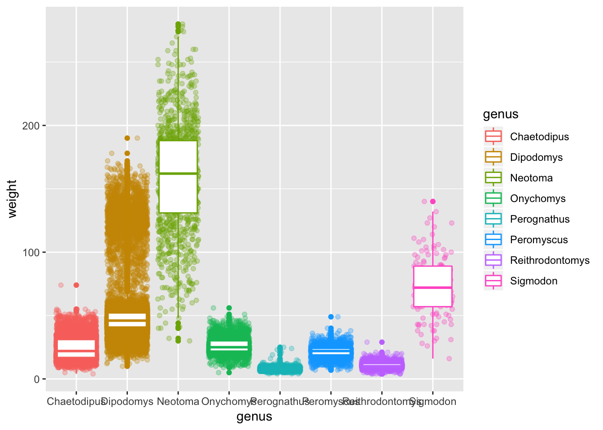
Challenge: violoin plot
Challenge: box plot alternatives (bonus)
Plotting time series data - group/summarise + line plot
Do the values change over years? within a year? seasonality?
Have the genus abundances changed over the years?
abundace = number of observations per genus per year
“per” -> group_by()
yearly_counts <- surveys_complete %>%
group_by(year, genus) %>%
summarise(countsPerGenusPerYear = n())visualize as line plot with years on x and counts on y
ggplot(data = yearly_counts, mapping = aes(x = year, y = countsPerGenusPerYear)) +
geom_line()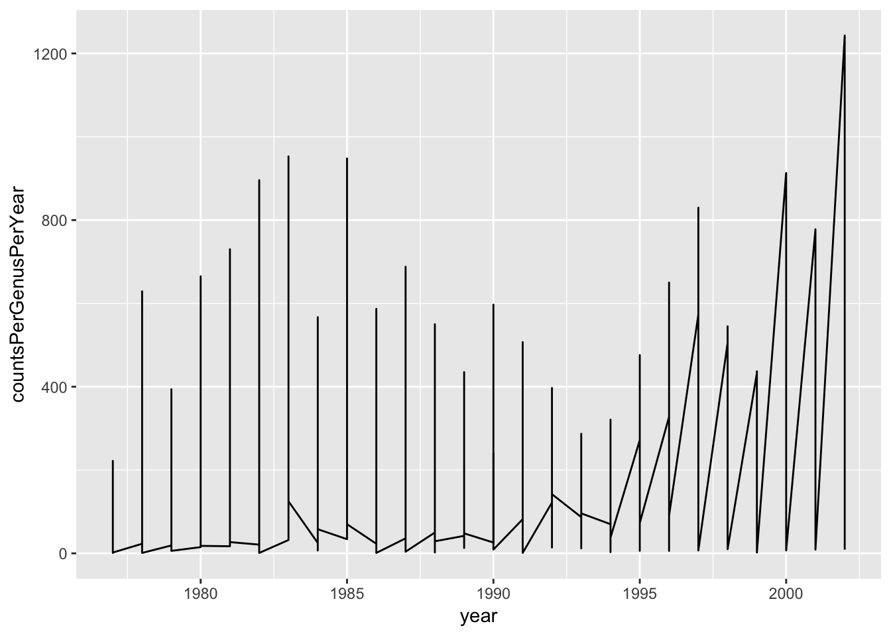
woa! what? let’s look at data for why
head(yearly_counts, n=20)## # A tibble: 20 x 3
## # Groups: year [3]
## year genus countsPerGenusPerYear
## <dbl> <chr> <int>
## 1 1977 Chaetodipus 3
## 2 1977 Dipodomys 222
## 3 1977 Onychomys 1
## 4 1977 Perognathus 22
## 5 1977 Peromyscus 2
## 6 1977 Reithrodontomys 2
## 7 1978 Chaetodipus 23
## 8 1978 Dipodomys 629
## 9 1978 Neotoma 23
## 10 1978 Onychomys 80
## 11 1978 Perognathus 33
## 12 1978 Peromyscus 14
## 13 1978 Reithrodontomys 2
## 14 1978 Sigmodon 1
## 15 1979 Chaetodipus 19
## 16 1979 Dipodomys 394
## 17 1979 Neotoma 30
## 18 1979 Onychomys 106
## 19 1979 Perognathus 16
## 20 1979 Peromyscus 22need to group data by genus then draw lines
ggplot(data = yearly_counts,
mapping = aes(x = year, y = countsPerGenusPerYear, group = genus)) +
geom_line()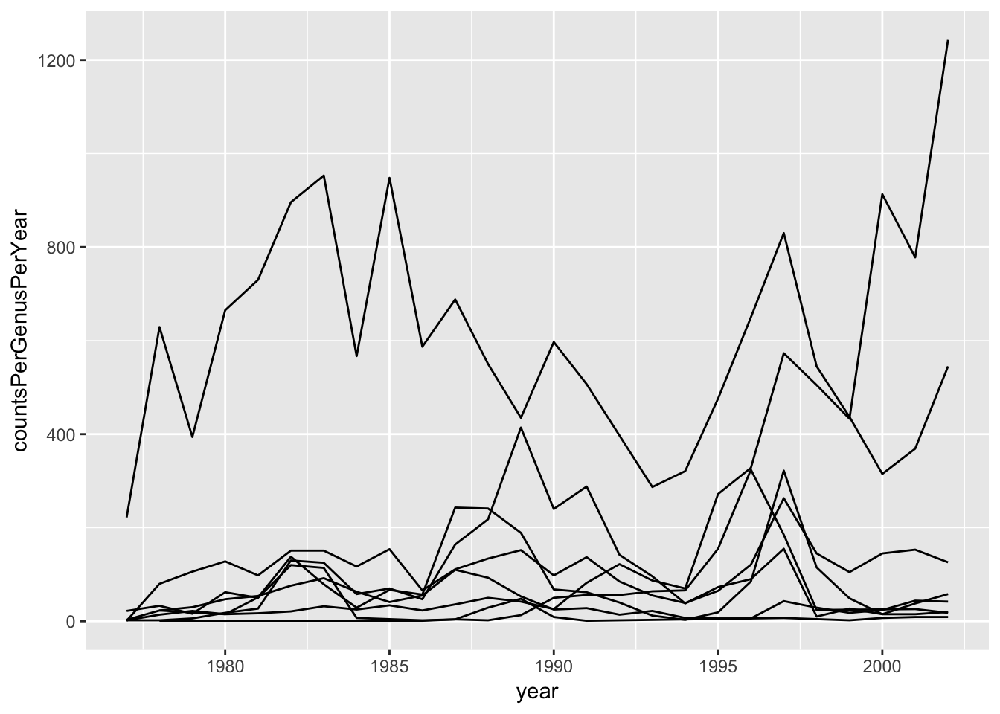
which is which? add colors per genus
ggplot(data = yearly_counts,
mapping = aes(x = year, y = countsPerGenusPerYear, color = genus)) +
geom_line()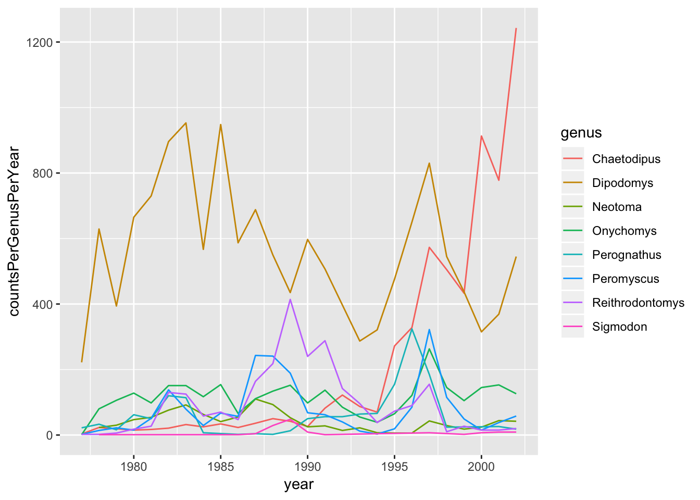
Challenge: line plot - median weight by month
Bonus challenge: variability in trend
Faceting
improve visibility of previous genus/time plot
split one plot into multiple plots based on a category in the data
ggplot(data = yearly_counts,
mapping = aes(x = year, y = countsPerGenusPerYear)) +
geom_line() +
facet_wrap(.~genus)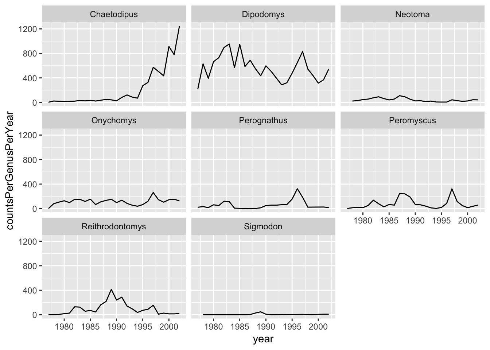
Are there sex differences in the time trends?
back to the data:
countsByYearBySex <- surveys_complete %>%
group_by(year, genus, sex) %>%
summarise(countsPerGenusPerYearPerSex = n())plot it
ggplot(data = countsByYearBySex,
mapping = aes(x = year, y = countsPerGenusPerYearPerSex, color = sex)) +
geom_line() +
facet_wrap(.~ genus)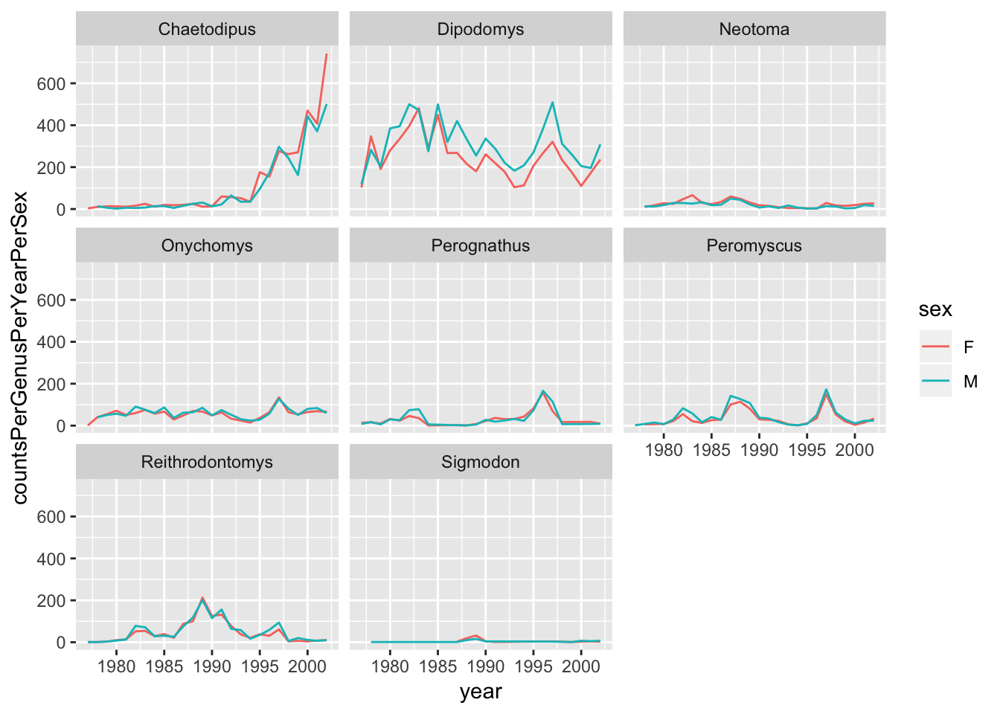
Challenge - sex diff by species?
Challenge - weight by year - recap
Bonus challenge: investigate species “RF”
Can skip: facet_wrap vs facet_grid
compare how the weights of males and females vs time, plot types
# One column, facet by rows
yearly_sex_weight <- surveys_complete %>%
group_by(year, sex, genus, plot_type) %>%
summarize(avg_weight = mean(weight))
ggplot(data = yearly_sex_weight,
mapping = aes(x = year, y = avg_weight, color = genus)) +
geom_line() +
facet_grid(sex ~ plot_type)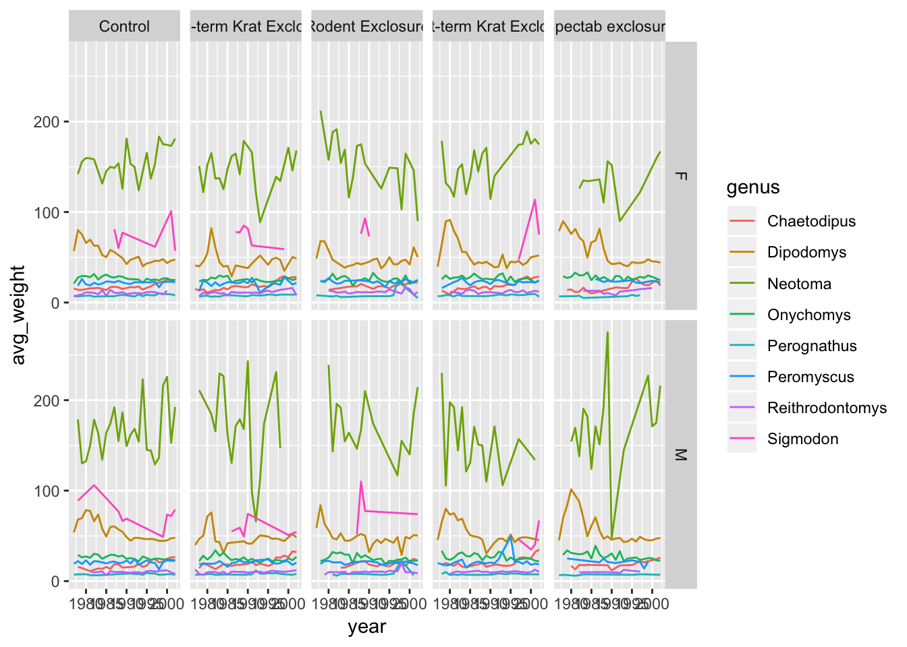
Factors - months
Does the number of animals observed in the genera “Onychomys” and “Perognathus” change from month to month across the years studied?
countsPerMonthPerYear <- surveys_complete %>%
filter(genus %in% c("Onychomys", "Perognathus")) %>%
group_by(year, month, genus) %>%
summarise(observationsPerGenusPerMonthPerYear = n())
countsPerMonthPerYear %>%
ggplot(aes(x=month,y=observationsPerGenusPerMonthPerYear,group=month))+
geom_boxplot() +
facet_wrap(. ~ genus)
get abbrev names of months
month.abb## [1] "Jan" "Feb" "Mar" "Apr" "May" "Jun" "Jul" "Aug" "Sep" "Oct" "Nov"
## [12] "Dec"month.abb[c(1,5,3)]## [1] "Jan" "May" "Mar"countsPerMonthPerYear$month %>% head()## [1] 8 9 10 10 11 12month.abb[countsPerMonthPerYear$month] %>% head()## [1] "Aug" "Sep" "Oct" "Oct" "Nov" "Dec"use this on our data
countsPerMonthPerYear %>%
mutate(monthNames = month.abb[month]) %>% #<------------------ ADDED THIS
ggplot(aes(x=monthNames,y=observationsPerGenusPerMonthPerYear,group=monthNames))+
geom_boxplot() +
facet_wrap(. ~ genus)
need factors to get the right order
Factors are very useful; contribute to making R particularly well suited to working with data
- Factors represent categorical data.
- ordered or unordered, default = alpha
- stored as integers associated with labels
- factors can only contain a pre-defined set of values, known as levels
sex <- factor(c("male", "female", "female", "male"))R will assign - 1 to the level "female" (alphabetical order) - 2 to the level "male"
levels()
nlevels()
levels(sex)## [1] "female" "male"nlevels(sex)## [1] 2Sometimes, the order of the factors does not matter, other times you might want to specify the order because it is meaningful (e.g., “low”, “medium”, “high”), it improves your visualization, or it is required by a particular type of analysis. Here, one way to reorder our levels in the sex vector would be:
sex # current order## [1] male female female male
## Levels: female malesex <- factor(sex, levels = c("male", "female"))
sex # after re-ordering## [1] male female female male
## Levels: male femaleIn R’s memory, these factors are represented by integers (1, 2, 3), but are more informative than integers because factors are self describing: "female", "male" is more descriptive than 1, 2. Which one is “male”? You wouldn’t be able to tell just from the integer data. Factors, on the other hand, have this information built in. It is particularly helpful when there are many levels (like the species names in our example dataset).
Converting factors
If you need to convert a factor to a character vector, you use as.character(x).
as.character(sex)## [1] "male" "female" "female" "male"as.numeric() BAD - gives levels
as.character() then as.numeric()
Another method is to use the levels() function. Compare:
year_fct <- factor(c(1990, 1983, 1977, 1998, 1990))
as.numeric(year_fct) # Wrong! And there is no warning...## [1] 3 2 1 4 3as.numeric(as.character(year_fct)) # Works...## [1] 1990 1983 1977 1998 1990back to our example
get the right order for months
countsPerMonthPerYearToPlot <- countsPerMonthPerYear %>%
mutate(monthNames = month.abb[month]) %>%
mutate(monthNames = factor(monthNames,ordered = T,levels = month.abb)) #<------------------ ADDED THIS
glimpse(countsPerMonthPerYearToPlot)## Observations: 459
## Variables: 5
## Groups: year, month [279]
## $ year <dbl> 1977, 1977, 1977, 1977, 1977…
## $ month <dbl> 8, 9, 10, 10, 11, 12, 1, 2, …
## $ genus <chr> "Perognathus", "Perognathus"…
## $ observationsPerGenusPerMonthPerYear <int> 6, 3, 1, 1, 6, 6, 3, 5, 1, 9…
## $ monthNames <ord> Aug, Sep, Oct, Oct, Nov, Dec…countsPerMonthPerYearToPlot %>%
ggplot(aes(x=monthNames,y=observationsPerGenusPerMonthPerYear,group=monthNames))+
geom_boxplot() +
facet_wrap(. ~ genus)
how to detect and avoid factors - glimpse() or str() - use read_csv not read.csv - strings_as_factors=F
Challenge - reorder genera in plot
Use a factor to reorder the genera in the plot we just made so that “Perognathus” comes before “Onychomys”
countsPerMonthPerYearToPlot %>%
mutate(genus = factor(genus,ordered = T,levels = c("Perognathus", "Onychomys"))) %>%
ggplot(aes(x=monthNames,y=observationsPerGenusPerMonthPerYear,group=monthNames))+
geom_boxplot() +
facet_wrap(. ~ genus)
Themes and Customization
lets use that species plot and fix it up
build this up 1 line at a time or share code and walk through
plotCountsByYearBySexBySpecies <- surveys_complete %>%
group_by(year, sex, species_id) %>%
summarize(n = n()) %>%
ggplot(mapping = aes(x = year, y = n, color = sex)) +
geom_line() +
facet_wrap(.~ species_id) +
labs(title = "Observed genera in time", # informative title and axis labels
x = "Year of observation",
y = "Number of individuals") +
theme_bw() + #white background looks better printed+
theme(panel.grid = element_blank(), # remove grid lines
text = element_text(size = 16), # readability: increase font size
axis.text.y = element_text(colour = "grey20", size = 12),
axis.text.x = element_text(colour = "grey20", size = 12,
angle = 90, hjust = 0.5, vjust = 0.5) # rotate x axis, justify
)
plotCountsByYearBySexBySpecies
all themes: http://docs.ggplot2.org/current/ggtheme.html
popular: theme_minimal() , theme_light()
ggplot2 cheat sheet to improve the plot.
Saving plots
save plot e.g. for manuscript
dir.create(path = "fig_output")## Warning in dir.create(path = "fig_output"): 'fig_output' already existsggsave(filename = "fig_output/countsByYearBySex.png",
plot = plotCountsByYearBySexBySpecies,
width = 15, height = 10,dpi = 300)Resusing custom themes
save theme to apply to next plot
grey_theme <-theme(axis.text.y = element_text(colour = "grey20", size = 12),
axis.text.x = element_text(colour = "grey20", size = 12,
angle = 90, hjust = 0.5, vjust = 0.5),
text = element_text(size = 16))
ggplot(surveys_complete, aes(x = genus, y = hindfoot_length)) +
geom_boxplot() +
grey_theme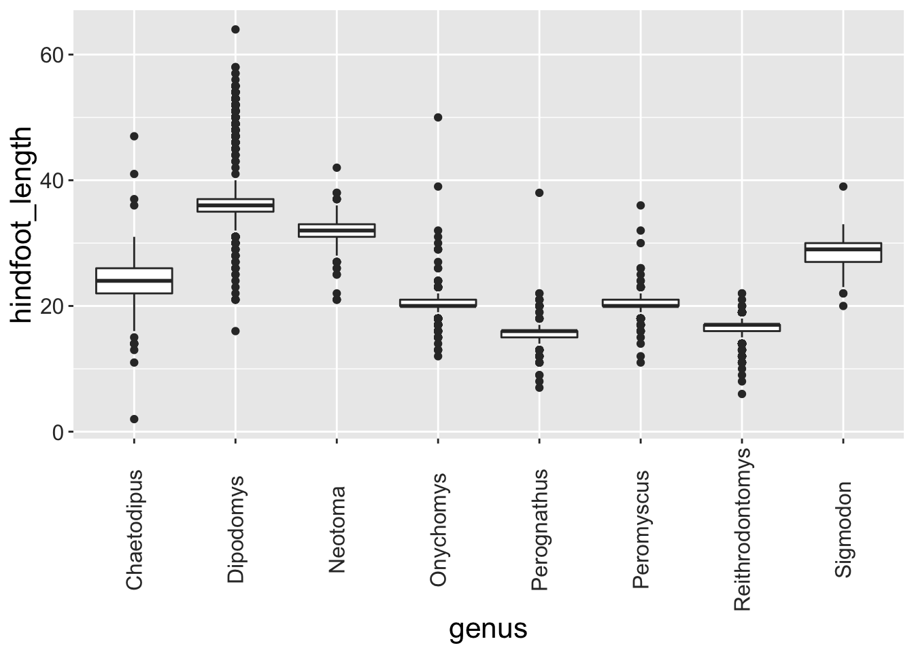
Challenge – free style
Arranging plots
just demo this?
figure that contains multiple plots using different variables or even different data frames
gridExtra package allows us to combine separate ggplots into a single figure using grid.arrange():
library(gridExtra)##
## Attaching package: 'gridExtra'## The following object is masked from 'package:dplyr':
##
## combinespp_weight_boxplot <- ggplot(data = surveys_complete,
mapping = aes(x = genus, y = weight)) +
geom_boxplot() +
labs(x="Genus", y= "Weight (g)") +
scale_y_log10() +
grey_theme
spp_count_plot <- ggplot(data = yearly_counts,
mapping = aes(x = year, y = n, color = genus)) +
geom_line() +
labs(x="Year", y= "Abundance") +
grey_theme
grid.arrange(spp_weight_boxplot, spp_count_plot, ncol = 2, widths = c(4, 6))## Don't know how to automatically pick scale for object of type function. Defaulting to continuous.## Error: All columns in a tibble must be 1d or 2d objects:
## * Column `y` is functioncombo_plot <- grid.arrange(spp_weight_boxplot, spp_count_plot, ncol = 2, widths = c(4, 6))## Don't know how to automatically pick scale for object of type function. Defaulting to continuous.## Error: All columns in a tibble must be 1d or 2d objects:
## * Column `y` is functionggsave("fig_output/combo_plot_abun_weight.png", combo_plot, width = 10, dpi = 300)## Saving 10 x 5 in image## Error in grid.draw(plot): object 'combo_plot' not foundNote: The parameters width and height also determine the font size in the saved plot.
Resources:
- built-in themes https://ggplot2.tidyverse.org/reference/ggtheme.html
- ggplot extensions: http://www.ggplot2-exts.org/gallery/
- gallery of plots - click on plot to see code https://www.r-graph-gallery.com/portfolio/ggplot2-package/
- more plots with code: http://r-statistics.co/Top50-Ggplot2-Visualizations-MasterList-R-Code.html#1.%20Correlation
- material in general here is good: http://r-statistics.co/
- common plotting customisations http://r-statistics.co/ggplot2-cheatsheet.html
Other
The + in the ggplot2 package is particularly useful because it allows you to modify existing ggplot objects. This means you can easily set up plot templates and conveniently explore different types of plots, so the above plot can also be generated with code like this:
# Assign plot to a variable
surveys_plot <- ggplot(data = surveys_complete,
mapping = aes(x = weight, y = hindfoot_length))
# Draw the plot
surveys_plot +
geom_point()

Learning Objectives
- Produce scatter plots, boxplots, and time series plots using ggplot.
- Describe what faceting is and apply faceting in ggplot.
- Modify the aesthetics of a ggplot plot (including axis labels and color).
- Build complex and customized plots from data in a data frame.
Factors can improve visualisation
head(surveys_complete)## # A tibble: 6 x 13
## record_id month day year plot_id species_id sex hindfoot_length
## <dbl> <dbl> <dbl> <dbl> <dbl> <chr> <chr> <dbl>
## 1 845 5 6 1978 2 NL M 32
## 2 1164 8 5 1978 2 NL M 34
## 3 1261 9 4 1978 2 NL M 32
## 4 1756 4 29 1979 2 NL M 33
## 5 1818 5 30 1979 2 NL M 32
## 6 1882 7 4 1979 2 NL M 32
## # … with 5 more variables: weight <dbl>, genus <chr>, species <chr>,
## # taxa <chr>, plot_type <chr>- Using your
yearly_diversitytable, can you recreate the plot below, ensuring the order of theplot_typefacets is as shown?
# Make a vector with treatments in desired order
## this is optional, but makes it easier to read the code
plot_type_order <- c("Control",
"Short-term Krat Exclosure", "Long-term Krat Exclosure",
"Rodent Exclosure", "Spectab exclosure")
# Factorise the `plot_type` variable with custom levels before plotting
yearly_diversity %>%
mutate(plot_type = factor(plot_type, levels = plot_type_order)) %>%
ggplot(aes(year, n_species)) +
geom_line(aes(colour = sex)) +
labs(colour = "Plot Type", x = "Year", y = "# species") +
facet_wrap( ~ plot_type)## Error in eval(lhs, parent, parent): object 'yearly_diversity' not foundData Carpentry,
2018. License. Contributing.
Questions? Feedback?
Please file
an issue on GitHub.
On
Twitter: @datacarpentry